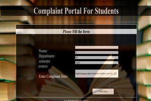
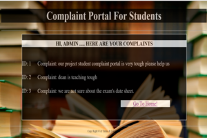

Student's Complaint Management System
Students may face alot of problems in the institution and management is not able to reslve all of them. Sometimes the Students do not highlight their problem very often. They may find it very timetaking to write an application for smallest of the issues. They may find the concern person absent or busy. This delays their issue. This is the complaint portal developed to ease students while registering their complaint. They will find it very easy to arise their issue. It will beneficial for management as well. The advantages includes but not limited to:
- Best way to track complaints all the way from submission to resolution.
- Maintaining reputation and compliance status.
- Set up automatic acknowledgements.
- Turn an email into a tracked incident that can be updated and automatically shared with the customer as emails.
- Effective acknowledgement and ongoing communication goes a long way towards making your customer feel valued.
- Capability to automatically escalate a complaint to a manager if it hasn’t been satisfactorily resolved in a certain time frame.
- Allows multiple team members to work ion the issue at the same time
- Restricts access when necessary. Only a handful of people can log into the software
- Certain fields might even need to be locked down so that they can only be seen by a subset of those that can view the incident.
- Categorizes the complaints and maintains the report for the status of complaints.


